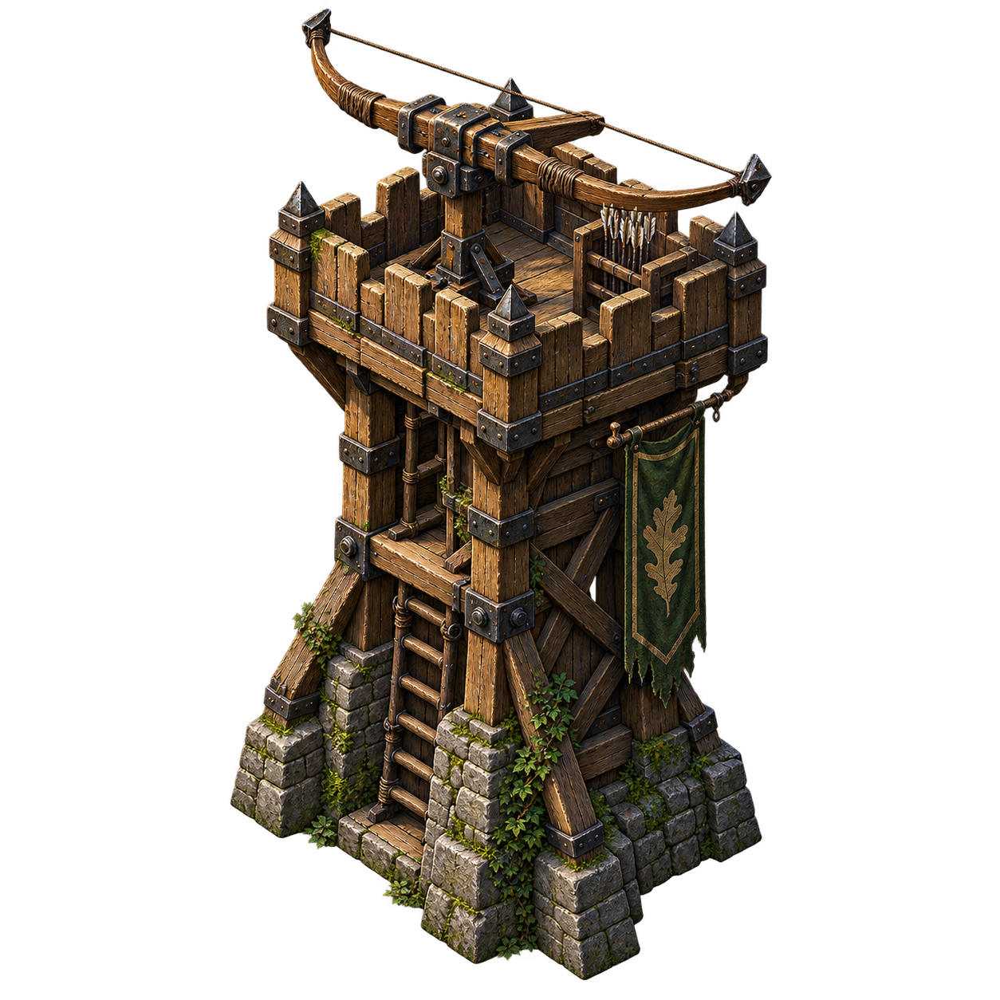
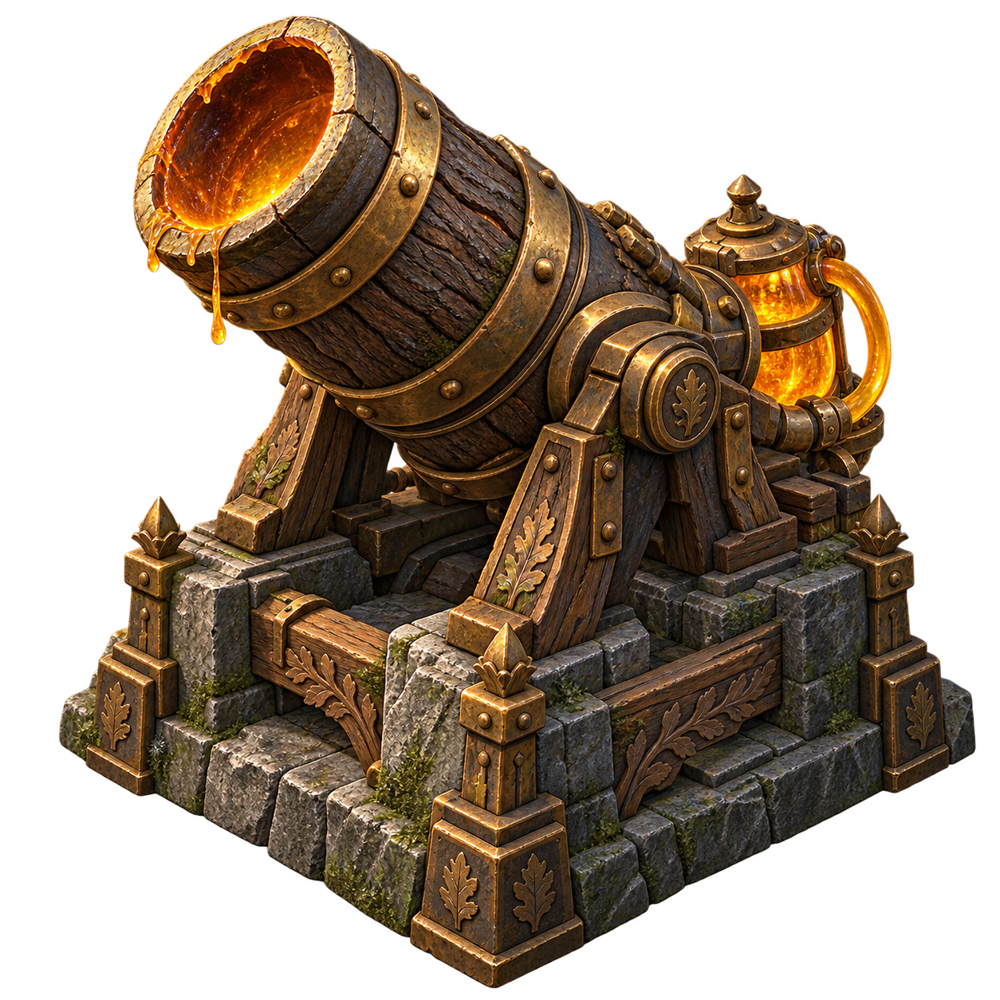
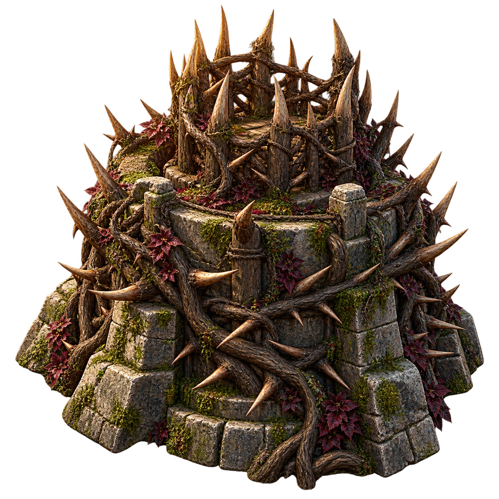
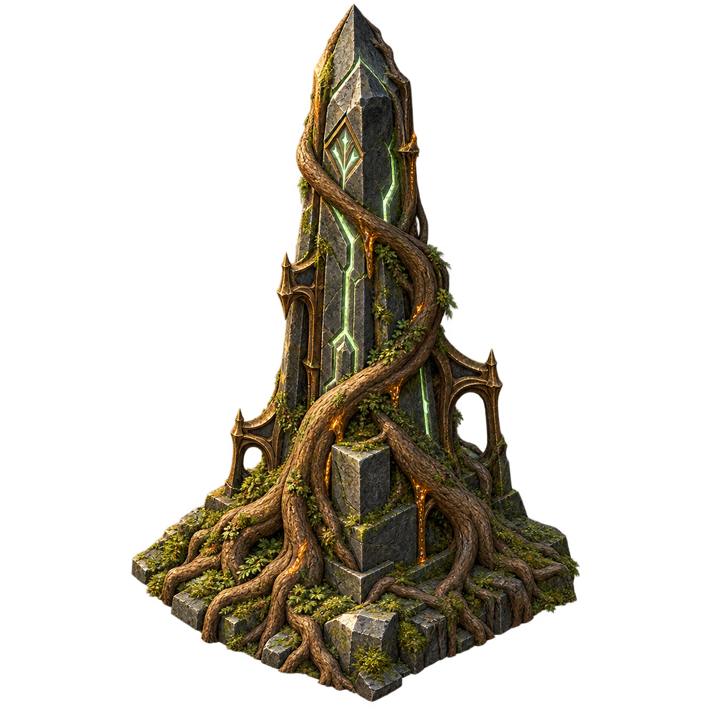

COMING LATERLONG-RANGE DEFENSE
Archer Watchtower
An elevated firing position built to strike pests from a distance.
THE FOREST STANDS WITH YOU.
Command your guardians. Hold the line. Protect the Tree of Life.
Place your guardians, then send the first wave.
COMING LATER · STRUCTURE TOWERS
A look at future defenses. Concept art and proposed roles only; these towers are not available to build yet.

COMING LATERLONG-RANGE DEFENSE
An elevated firing position built to strike pests from a distance.

COMING LATERSPLASH DAMAGE
Heavy sap bombardment designed to break up crowded waves.

COMING LATERPATH CONTROL
A bramble fort intended to cast slowing thorn patches onto the route.

COMING LATERGUARDIAN SUPPORT
An ancient rooted monument envisioned to strengthen nearby guardians.